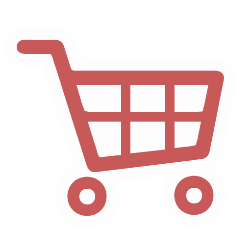

Genesis
Genesis
I begyndelsen var der kun SAU-shoppere, som ingen mulighed havde for nemt at finde alternativer til deres mange undervisningstimer på medicin, i tilfælde af sygdom, arbejde eller dovenskab. Men så sagde David Svane: "Lad der blive en SAU Shop", og det blev der, og han så at alt var godt. Ja, jeg sammenlignede lige mig selv lidt med gud, men det er et rent tilfælde...
Bag Disken
SAU Shoppen kræver 1 del web-programmering, 1 del web-scraping af KU's skema, 3 dele tålmod og 2 dele øl. Bedste drink! Men ærlig talt, så gør SAU Shoppen blot, hvad du selv ville have gjort, hvis du skulle finde rundt i KU's skemaer. Den eneste forskel er, at den gør det super nemt, super hurtigt og super duper.
Lommepenge
De månedlige udgifter er for små til, at jeg gider bede andre om hjælp, men af to omgange har Studenterrådet ved KU været behjælpelige med en pose skillinger. Første gang var i efteråret 2016, da domænet sau-shoppen.dk skulle købes, og der samtidig skulle oprettes et web-hotel. Anden gang var i foråret 2018, da SAU Shoppen's bestyrelse (læs David Svane) besluttede at udvide med en ny app-afdeling.
Kærlighed
SAU Shoppen har i skrivende stund, forår anno 2018, været anvendt over 350.000, og det skal du simpelt hen bare roses for. Hvor er det dejligt, når ens hobby kommer andre mennesker til glæde! Håber vi ses på panum til en øl.